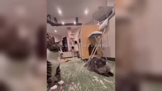
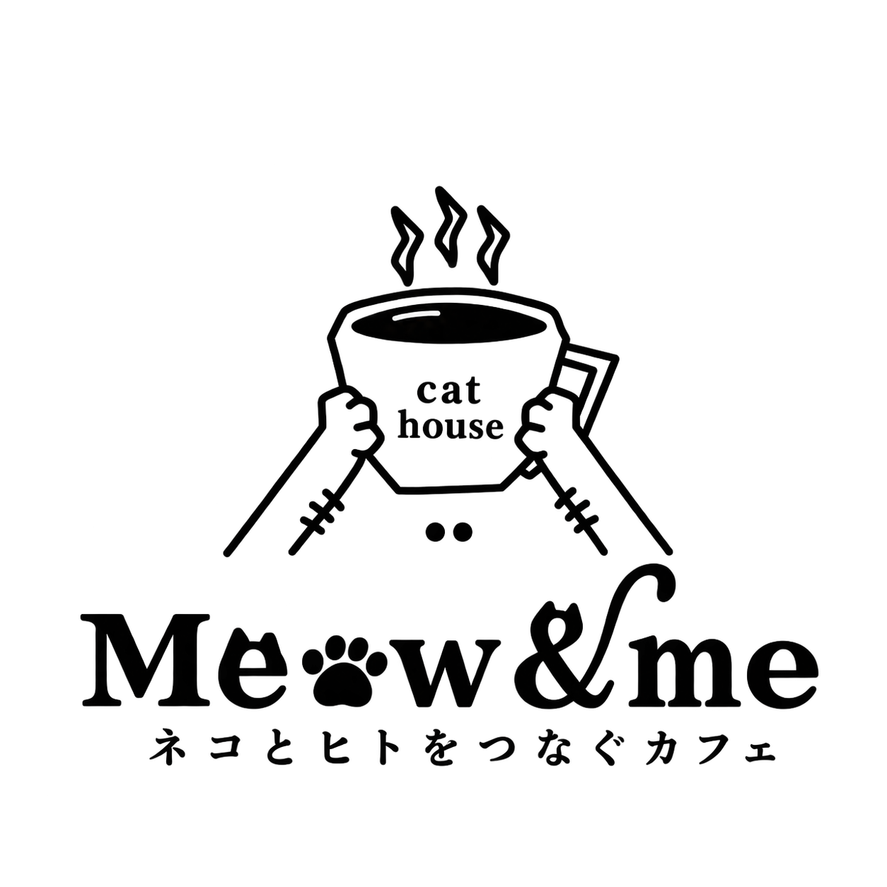
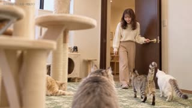
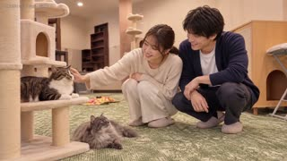
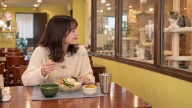
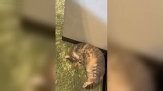

01 / 0–11秒
猫たちの実写
いろいろな猫の表情と動きを短く重ね、最初に魅力を見せます。

猫とふれあう時間を主役に。
ひとりでも、ふたりでも訪れたくなる動画へ。
唐津店では、猫とのふれあいを中心に構成。食事は「ガラス越しに猫を眺める」3秒の場面にまとめました。

いろいろな猫の表情と動きを短く重ね、最初に魅力を見せます。

来店から猫エリアへ。遊ぶ姿・手元・横顔を切り替えます。

入室、猫とのふれあい、顔を見合わせる表情へ。

仕切りの実写を挟み、食事は3秒・1カットだけ。

くつろぐ猫の実写から、正式ロゴで締めます。
鈴木さん、お疲れさまです。 Meow&me唐津店の動画について、参考動画に合わせた構成ラフv13をまとめました。 10/20の資料を反映し、実際の扉を反映したうえで、女性の入室を参考動画と同じ室内側からの画角へ修正しました。 参考動画： https://www.youtube.com/watch?v=by4mtZccTuY 【今回の方向性】 猫の実写 → 女性ひとりの来店・ふれあい → カップルの入室・ふれあい → 猫を眺めながら食事 → ロゴ、という52.5秒の流れです。 【反映した点】 ・カップルの入室も女性ひとりの場面と同様、室内側から二人の表情が見える画角へ修正 ・実際の濃茶の扉・金色取っ手に修正し、女性の入室を室内側から迎える参考動画の構図に変更 ・受領した猫動画と、指定Instagramの実写素材を組み込み ・人物は引き・横顔・手元・ツーショットで画角を変え、同じ人物画像の再使用を解消 ・テロップは参考動画の白文字・広めの字間・中央配置に寄せて調整 ・PC作業とドリンク受け渡しは外し、食事は終盤の3秒だけに整理 ・添付の正式ロゴを使用 現段階は構成・画角・テンポ確認用の無音ラフです。人物部分は生成静止画にカメラ移動を付けた状態で、動画化前です。内装は実写資料を参照したイメージです。 まずは、全体の流れ／人物の画角／食事の扱いについてご確認いただきたいです。 確認用モックアップ： https://hoshizaemonn.github.io/RUNBIRD/meowme-review-v10/